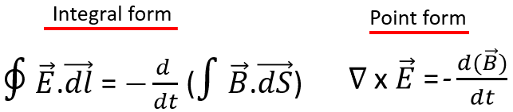
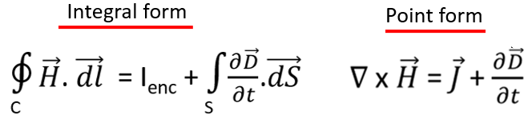
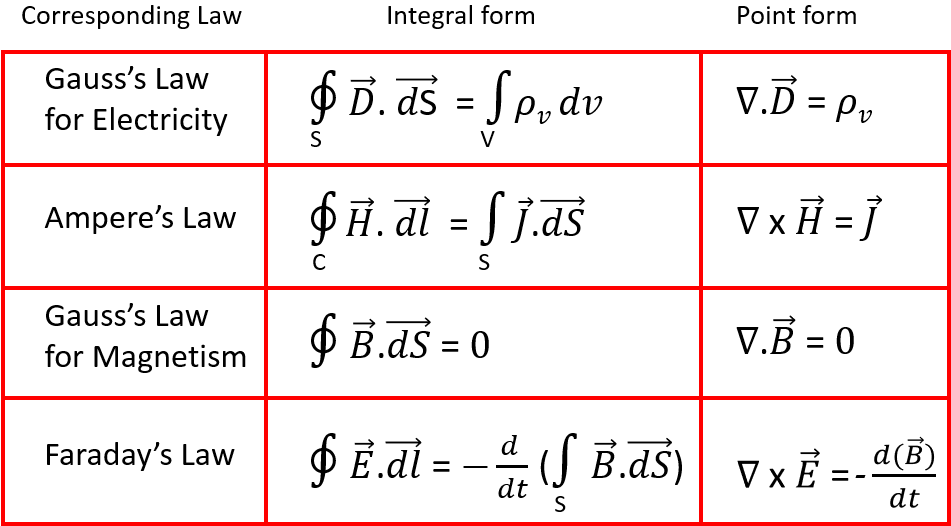

HOME BLOG EBOOKS ABOUT CONTACT SHOP
In the last section, we discussed 2 of the 4 Maxwell's laws. Here we move on to the other 2 law's, the Faraday's law and the Ampere-Maxwell law. These 2 laws are basically defined for dynamic Electric and Magnetic fields. Although we could define them for static fields as well as a special case.
According to the Faraday’s law, “An EMF will be induced in a conductor that is placed in a varying magnetic field and this induced EMF is directly proportional to the rate of change of magnetic flux”. The main takeaway from this law is that both electricity and magnetism aren’t really 2 unrelated phenomena, they are 2 sides of the same coin. Varying one can produce the other and vice versa.

Refer Faraday's Law
The integral form relates the line integral of the Electric field intensity to rate of change of Magnetic flux producing it. Whereas the differential form relates the curl of the Electric flux density to the rate of change of Magnetic field Intensity.
Maxwell realized that the Ampere’s Circuital law holds only for steady magnetic fields, but when it comes to varying magnetic fields, the law fails. So he took it on himself to modify the ampere’s law and generalize it. The result is the Ampere-Maxwell law.
Consider a practical case. If you are familiar with circuits, you might recall that an AC current can pass through a capacitor or that a capacitor acts like a short circuit when AC is applied. But we know that a capacitor is just 2 metal plates separated by a dielectric and therefore there is no way actual charges is transported between the plates. In this case, if you were to consider an amperian loop between the plates, there is a magnetic field, but there is no enclosed current. How is this possible?
This practical example and ofcourse the mathematical proof (not discussed here) suggests that there is a charge-less current. Maxwell called it the Displacement current. To account for the displacement current, a new term Jd called the displacement current density was added to the Ampere’s law.

